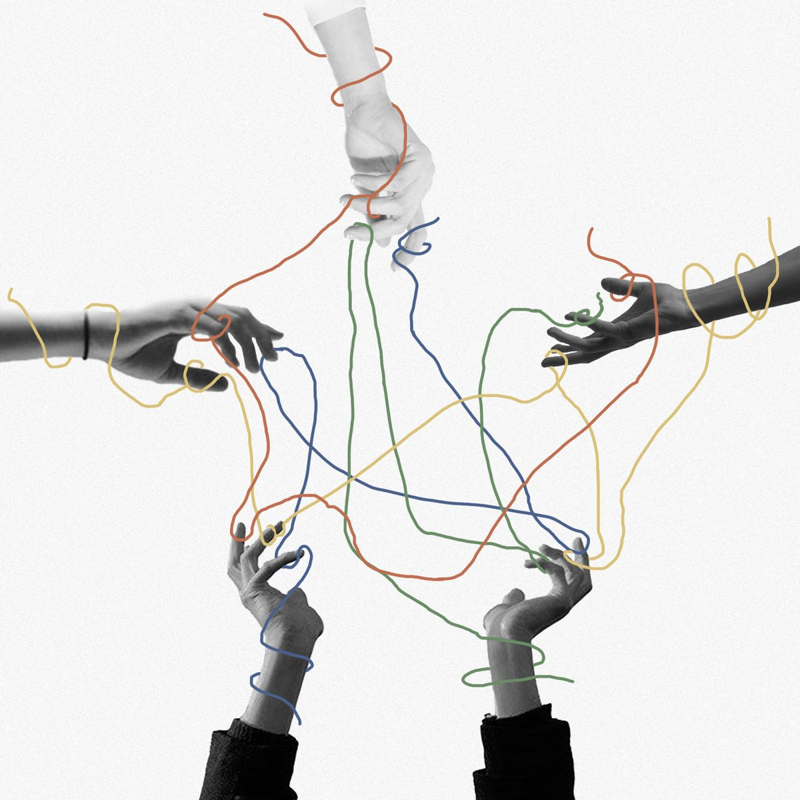
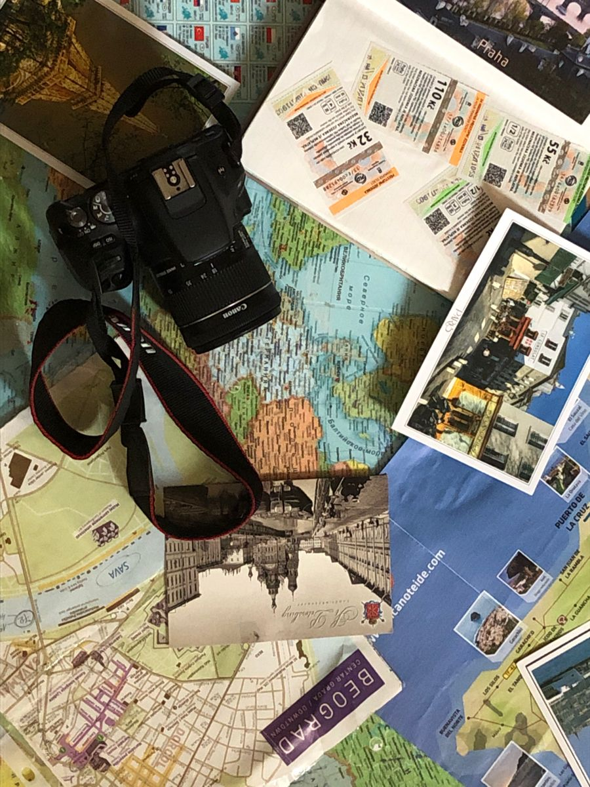
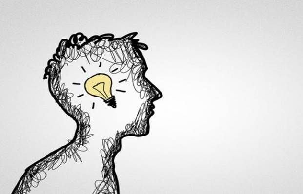

The Open-Door-Pause

“Alam mo yung feeling na gusto mo nalang umalis or mag isolate?”
The Open-Door Pause. It describes the need to step back when life feels overwhelming while keeping a path open for honest communication, support and return.
The pause is the time I give myself to breathe, reflect and recover. The open door represents the people and responsibilities that still matter to me, even when I need distance from them for a while.
Maybe you want to deactivate your social media, stop answering messages, go somewhere far away or just be alone. But then you remember your responsibilities, the people who need you and the people you love. That’s where this philosophy begins. It asks: Can I choose myself without making the people I care about feel abandoned?
“Kasi, ’di ba?”
I believe that we should not have to choose between being considerate of other people and protecting our own well-being. We can care about others and still need time for ourselves. Choosing yourself is not automatically selfish. Sometimes, it means recognizing that you also need rest, space and time to figure things out.
Sometimes the responsibilities we have are also part of the reason we want to escape? You might want to leave social media, but your groupmates need to contact you because you’re the leader. You might want to travel and see the world, but your work is the source of your income. Then you earn money for the trip, but you still have to work and wait for the right time to use it.
“Parang cycle lang siya ng responsibilities, dreams and wanting to have time for yourself”.
The Open-Door Pause does not say that we should suddenly leave everything behind. It also does not say we should ignore our needs just to keep everyone else comfortable. Instead, it encourages us to pause, understand what we need and find a thoughtful way to make space for ourselves.
Sometimes taking distance is a way to recover. Other times, it can become avoidance. We might withdraw because we need rest, but we might also be using that distance to avoid a difficult conversation, an important responsibility or feelings we do not know how to face yet. The goal is not to judge ourselves for wanting to escape. It is to understand why we want to leave and decide what would actually help.
And when it comes to the people we love, attachment can make taking space feel even more complicated. We may worry that being unavailable will hurt them or make us seem mean. We may also think that because we feel unstable, we are bound to hurt them. But needing space does not mean we stopped loving them. Being attached to someone does not mean we have to be available every second. We can love someone and still need time alone.
(Sometimes it can lead to problems in a relationship but that's for a different talk bleh xd)
Principle 1: Consideration must include yourself
You do not have to choose between being considerate of other people and protecting your own well-being. A good decision considers both your needs and the people affected by your choices. If you keep saying yes when you are already overwhelmed, you may eventually have nothing left to give. Taking your limits seriously can help you care for others more honestly.
Quick real talk, sometimes being too considerate to others can lead you to be inconsiderate to yourself.. which also leads you to be inconsiderate of others.

Principle 2: Choosing yourself is not selfish
Choosing yourself does not mean that you do not care about anyone else. It can mean taking time to rest, reflect or pursue something meaningful to you. You can honor your needs while still taking responsibility for your commitments. Your well-being matters too, hindi lang yung needs ng ibang tao.
Principle 3: Distance should be communicated with care
When I need space from people I love, I should try to explain that need instead of disappearing without saying anything. I can tell them that I need time to rest or settle myself and, if I can, let them know when I might check in again. This respects my need for privacy while helping the other person understand what is happening. This does not mean I need to explain every detail or ask permission to take a break. It means I can be honest and considerate in how I take that space.
Actually heavy ako dito. Here's a quick tip
Tip: Be reachable, but protect your time
It is important to be reachable, but responding immediately is not always your responsibility. Know which people matter most to you and recognize the relationships where frequent communication has become the norm. When you regularly talk to someone, your usual availability may create an expectation that you can be reached. If you suddenly take much longer to respond, they might misunderstand the silence or worry that something is wrong.
Respecting those relationships can mean communicating when you need space. At the same time, you are never obligated to answer anyone immediately. The respect you give to a relationship should be matched by the respect others give to your personal time. The people who care about you should understand that needing time for yourself does not mean you care about them any less.
Principle 4: Do not decide for others that you are a burden
When I feel emotionally unstable, I may worry that I will hurt or burden the people I love. That fear can feel very real, but it does not automatically prove that I will hurt them or that they want me to shut them out. I should reflect on my actions and take responsibility if I have caused harm. But I should also let people decide for themselves whether they want to support me instead of making that decision for them.
Principle 5: Solitude needs timing, preparation and a way back
Wanting to leave, go offline or be alone can be a real and long-held desire. But the way I act on it matters. I should consider the right time, place and approach. I should also think about the responsibilities that still need attention and the people who may be affected.
Do you know how you might have planned and dreamed about the moment you finally get to leave and isolate yourself? That plan can feel like the only way to find peace. But sometimes a breath, a pause and a proper goodbye are also part of the puzzle. Taking time to say what you need to say or arranging what needs to be handled can help you leave with more peace and less harm. If everyone who wanted to escape suddenly disappeared, responsibilities and relationships could be left behind without explanation. Knowing that other people feel this way too does not mean we should ignore our own needs. It reminds us to find the proper time, place and approach to meet those needs with care.
Principle 6: Ask whether distance is helping you recover or helping you avoid
Before I withdraw, I should ask myself what I am trying to get from the distance. Do I need rest, quiet or time to regain balance? Or am I avoiding a conversation, responsibility or problem that will still be there when I return? Sometimes the answer is both. I may need a break first, then a plan for facing what I have been avoiding. Taking a pause can help me return to the problem with more clarity. But if I keep avoiding it without a plan to return, the distance may not bring the peace I hoped for.
Principle 7: Attachment can coexist with independence
Caring deeply about someone does not require constant availability. Needing time alone does not erase the love or attachment I feel. I can communicate that I need space while still showing that the relationship matters to me. Kasi, ’di ba, sometimes we think taking a break means we are being rude or mean to our partner? But needing time for yourself is not the same as rejecting them. A healthy relationship can make room for both connection and individuality.
Situation 1: I am the group leader but want to deactivate social media
I feel overwhelmed and want to deactivate my social media, but my groupmates need to contact me about schoolwork because I am the leader. The Open-Door Pause would remind me that I can take a break without suddenly leaving them without a way to reach me. I could tell them that I need some time offline, set a limited time to check important messages or ask a co-leader to handle urgent concerns. I should also ask myself whether I need rest or whether I am avoiding a difficult group issue. Either way, I can take my feelings seriously while making a reasonable plan for the people who depend on me.
Situation 2: I want to travel but feel trapped by work and money
My work provides the income I need, but it also takes time and energy. I want to travel and see the world, yet I feel like I cannot enjoy the money I earn because I need to keep working. The Open-Door Pause would encourage me to think through the situation instead of making an impulsive decision that could put my needs or responsibilities at risk. I could save a realistic amount for travel, plan a shorter trip, request time off or reconsider whether my current work arrangement is sustainable. This lets me take my dream seriously while also thinking about the consequences of my choices. It may also help me see whether I need a break from work or whether there is a bigger problem I have been avoiding.

Situation 3: I want time alone from my partner
I feel overwhelmed and want to be alone, but I worry that my partner will feel rejected or think I am being rude. The Open-Door Pause would encourage me to talk to them honestly and gently. I could say that I care about them but need some time to rest, then suggest when we can talk or reconnect. This respects both my need for solitude and my partner’s feelings. It also reminds me that attachment can remain even when I am temporarily unavailable. Taking a little time for myself does not automatically mean I love them any less.

Situation 4: I feel too unstable to be around people I love
I worry that my emotional state might hurt the people close to me, so I consider cutting them off. The Open-Door Pause would help me recognize that my fear is not automatically proof that I am a danger or a burden to them. I should pay attention to my behavior, take responsibility if I have caused harm and ask for space if I need it. I could also reach out to someone I trust instead of deciding that I have to handle everything alone. If I have hurt someone, I should acknowledge it and try to repair the harm. If I am avoiding a difficult conversation because I feel overwhelmed, I can take time to prepare for it instead of disappearing indefinitely. My feelings matter, but so does how I act on them.
I believe this philosophy is meaningful because many people feel caught between their responsibilities and their desire to rest, explore or be alone. They may care deeply about the people who depend on them while also feeling exhausted by the demands they carry. They may want to isolate themselves because they fear their struggles will hurt the people they love, even when those people may want to understand and support them.
The Open-Door Pause offers another way to respond. It does not treat self-care as selfishness or responsibility as a reason to erase yourself. It encourages people to communicate, set limits, share responsibilities and remain open to support. It also asks them to think about whether withdrawing is helping them recover or keeping them from facing something important. A better society would not expect people to prove their love by being available all the time. People should be able to take reasonable breaks, ask for help and return to their commitments with more honesty and consideration.
My guiding thought is:
I can pause without disappearing, care for others without abandoning myself, and ask for support without deciding that I am a burden.
References:
Aristotle. (n.d.). Nicomachean ethics (W. D. Ross, Trans., Book IX). The Internet Classics Archive. https://classics.mit.edu/Aristotle/nicomachaen.9.ix.html
Aristotle discusses the relationship between how a good person treats themselves and how they treat a friend. This offers a philosophical basis for considering care for oneself as relevant to caring relationships.
Deci, E. L., & Ryan, R. M. (2000). The “what” and “why” of goal pursuits: Human needs and the self-determination of behavior. Psychological Inquiry, 11(4), 227–268. https://doi.org/10.1207/S15327965PLI1104_01
Self-determination theory discusses autonomy, competence and relatedness as basic psychological needs. This supports the idea that people need both meaningful relationships and some control over their lives.
Reyes, J. (2015). Loób and kapwa: An introduction to a Filipino virtue ethics. Asian Philosophy, 25(2), 148–171. https://doi.org/10.1080/09552367.2015.1043173
Reyes explains loób and kapwa as central ideas in a relationship-oriented Filipino virtue ethics. This supports considering personal choices in relation to shared personhood and relationships.
Sander-Staudt, M. (n.d.). Care ethics. Internet Encyclopedia of Philosophy. https://iep.utm.edu/care-ethics/
Care ethics emphasizes relationships, human dependence, attention to people’s needs and care for both oneself and others. This supports the philosophy’s focus on mutual care and thoughtful decisions.
Sonnentag, S., & Fritz, C. (2007). The Recovery Experience Questionnaire: Development and validation of a measure for assessing recuperation and unwinding from work. Journal of Occupational Health Psychology, 12(3), 204–221. https://doi.org/10.1037/1076-8998.12.3.204
Research on psychological detachment describes mentally disengaging from work during nonwork time as part of recovery from work stress. This supports making room for genuine breaks.